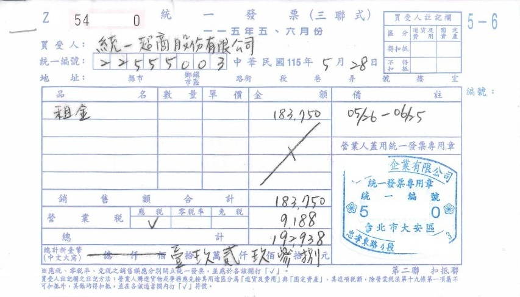
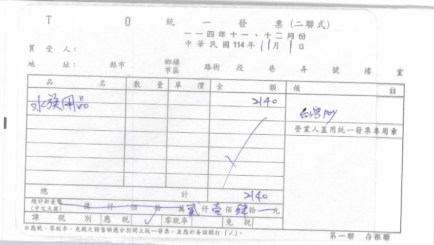
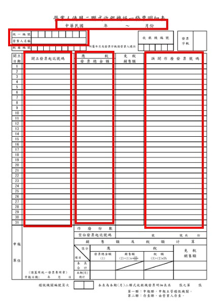

統一發票怎麼開？三種常見發票一次搞懂
對剛開始營業的老闆來說，「發票到底要怎麼開？」其實是很常遇到的問題。
哪一聯要交給客戶？
公司統編要不要寫？
品名可以寫「一批」嗎？
金額到底要填未稅還是含稅？
稅額要怎麼計算？
寫錯可以塗改嗎？
發票已經交給客戶，發現錯了怎麼辦？
以下就以實務上常見的三種發票說明。
一、手開三聯式統一發票
三聯式發票主要是提供給營業人或其他需要憑證的買受人使用。
一般可以從發票上的買受人資料判斷。例如客戶是公司、行號或其他營業人時，客戶通常會主動提供買受人的抬頭及統一編號；這個時候再依客戶資訊及交易內容進行發票開立。
三聯式發票怎麼開？
一般開立時，應依發票格式填寫相關資料，必填欄包括：
- 開立日期
- 買受人名稱
- 買受人統一編號
- 品名
- 銷售額
- 營業稅額
- 總計
- 總計（中文大寫）
- 最後別忘了蓋發票章
如果適用一般應稅營業稅率，應依規定計算銷售額及營業稅額，再填入發票相對應欄位，而不是直接把11,000元全部填在「銷售額」欄。
以下提供一範例供老闆們參考：

銷售額、稅額、總計 三者間的關係
- 方法一：告知客戶商品為未稅,稅金另計時適用.
- 稅額 = 銷售額 * 5%
- 總計 = 銷售額 + 稅額
- 依上例：報價不含稅(未稅),應另加5%
- 則,
- 稅額 = 183750 * 5% = 9188
- 總計 = 183750 + 9188 = 192938元
- 方法二：告知客戶商品為含稅價時適用.
- 銷售額 = 總計 / 1.05
- 稅額 = 總計 - 銷售額
- 依上例：報價已含稅,不再另加5%
- 則,
- 銷售額 = 192938 / 1.05 = 183750元(四捨五入到整數位)
- 稅額 = 192938 - 183750 = 9188元
如果不確定計算是否正確，記帳士事務所提供 手開發票小幫手 供您比對確認。
三聯式發票要注意什麼？
- 發票日期應依規定填寫。應依日期時序開立，不得回溯開立。
- 買受人名稱及統一編號要正確。
- 品名應能合理表達實際交易內容。
- 銷售額、營業稅及總計應相符且對應。三者的比例為 100 : 5 : 105 。
- 發票開立完成後，應撕下第二聯及第三聯交付買受人（公司行號消費者）。
- 發票開立完成後，第一聯應保留在手開發票本上。
- 不要任意塗改發票內容。
- 發票開立應依字軌號碼依序開立，不得跳號或漏號。
對公司客戶而言，統一編號尤其重要。統編寫錯，除了需要處理更正問題，也可能影響買受人後續帳務及進項憑證處理。
二、手開二聯式統一發票
二聯式發票也是常見的手開發票形式，主要用於非營業人的交易情況。
例如一般消費者向商店購買商品或接受服務，通常不會提供公司統一編號。
二聯式發票怎麼開？
一般應依發票格式填寫：
- 開立日期
- 買受人資料（得不填寫）
- 品名
- 總計
- 總計（中文大寫）
- 最後別忘了蓋發票章
實際填寫時，要依使用中的統一發票格式及規定辦理。
二聯式發票常見注意事項
以下提供一範例供老闆們參考：

- 品名應與實際交易相符。
- 收款金額與發票總計金額應一致。
- 發票應按照實際交易時間開立，不宜集中到月底才一次補開。
- 發票應依日期時序開立，不得回溯開立。
- 發票開立完成後，應撕下第二聯交付買受人（個人消費者）。
- 發票開立完成後，第一聯應保留在手開發票本上。
- 寫錯時不要自行撕掉或任意修改，應依規定辦理作廢或更正。
- 發票開立應依字軌號碼依序開立，不得跳號或漏號。
三、二聯式收銀機發票
如果是商店、餐飲業、零售業等具有大量零星交易的營業人，實務上也很常見二聯式收銀機發票。
這類發票與「手開二聯式發票」最大的不同，就是通常透過收銀機或相關設備開立。
收銀機發票怎麼開？
實際操作會依收銀機或系統設定而有所不同，請洽收銀機廠商。

記帳士事務所小提醒：
- 想要使用收銀機開立統一發票，應向轄區國稅局辦理申請核備，才有辦法使用喔。
- 使用收銀機開立二聯式統一發票的營業人，於每期申報銷售額所檢附之收銀機統一發票明細表，
- 應載明每部收銀機每日開立統一發票的
- 起訖號碼、
- 應稅發票總金額、免稅銷售額及
- 作廢發票號碼，
- 並彙總計算當期銷售總額及營業稅額，載明於明細表適當欄位。
對每天有大量交易的店家來說，收銀機發票的重點不只是「會不會按」，而是整套收銀及發票管理流程是否正確。
本所提供發票明細表空白版本供您下載：

記帳士事務所小建議：
- 如果老闆已經有現成的二聯式發票收銀機，暫時沒有意願導入電子發票時，也可繼續使用。但請特別小心填寫發票明細表，以免錯誤申報造成補稅罰款。
- 使用收銀機開立統一發票，有下列缺點，建議導入電子發票。
- 耗費人力：每日應進行收銀機結帳、並填寫發票明細表
- 容易出錯：忘記結帳、放錯紙卷、明細表填寫錯誤、忘記扣除作廢發票金額
- 保存負擔：存根聯需實體留存，很佔用空間，且調閱不易。
- 成本較高：如果使用量大的話發票費用驚人，運費及倉儲費也是成本
結論：門市業者、網路銷售業者、發票使用量大的業者，都強烈建議使用電子發票。
四、事務所提醒
統一發票的開立方式會依營業人身分、交易性質、發票種類及實際交易情況而有所不同。本文提供一般性實務說明，若遇到作廢、更正、折讓、退貨、零稅率、免稅或特殊行業等情況，建議於開立前先向記帳士事務所或會計師事務所確認，以避免後續帳務及稅務處理產生問題。